[ Project 10 / 10 ]Branding & Visual IdentityPortfolio 2026
Brand Identity & Logo Design
A collection of client logo projects developed during my professional experience, translating different brand needs into distinct visual identities.
- Brands
- 03 Brands
- Created at
- Grafikir · ADL Kurumsal
- Time
- Up to 3 days per logo
- Role
- Logo Design
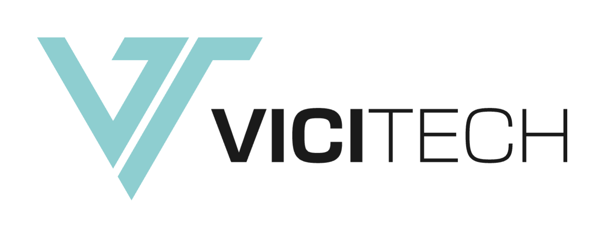
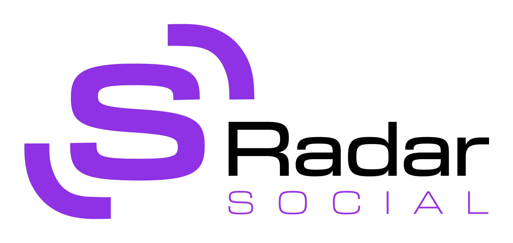
01Overview
A collection of client logo projects developed during my professional experience, translating different brand needs into distinct visual identities.
02What I did
Logo design for three client brands, each completed in up to three days.
Arabica Kitchen — at Grafikir · Vicitech — at ADL Kurumsal · SRadar — at ADL Kurumsal03Outcome
The Kitchen Fit identity takes inspiration from the original Arabica Coffee House logo.
Fig. 10.1a Real-life brand application10.1Arabica Kitchen
Arabica Kitchen
Arabica Kitchen · Arabica Kitchen FitClient project · created at Grafikir · Logo design · up to 3 days
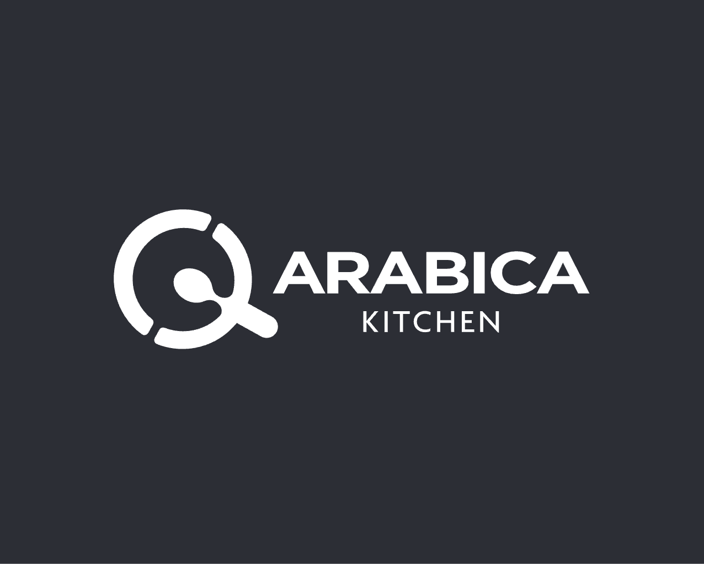
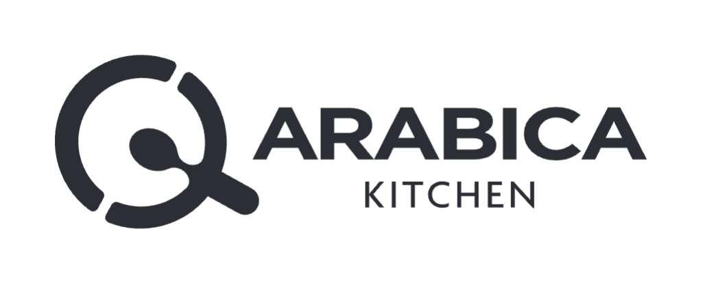
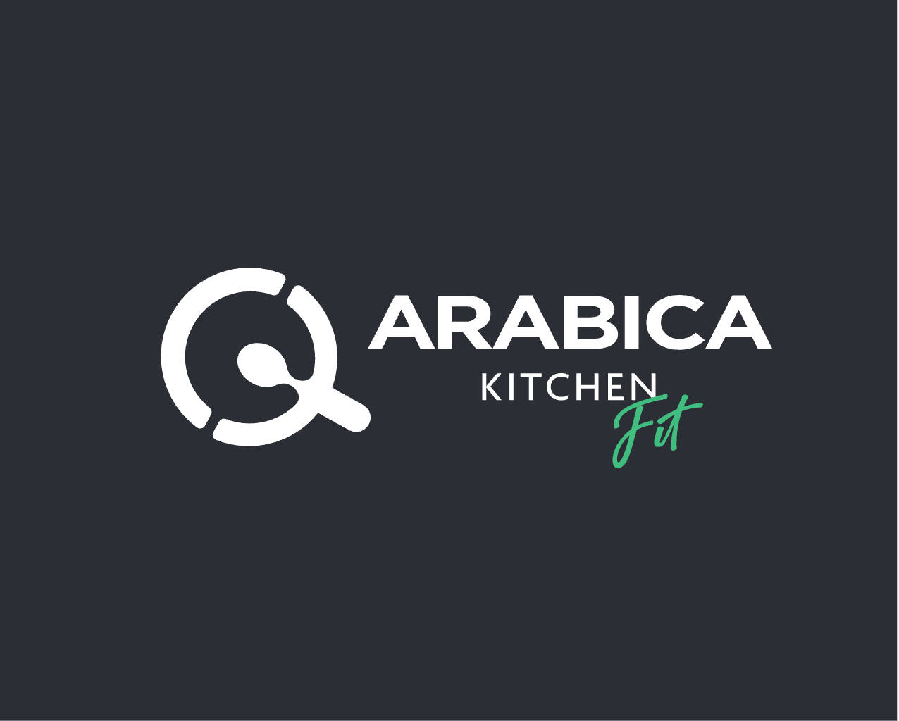
HEX #2C2E35
HEX #41BE7F
HEX #FFFFFF
10.1 — — Development
Kitchen Fit × Arabica Coffee House
The Kitchen Fit identity takes inspiration from the original Arabica Coffee House logo. By slightly rotating and adapting its distinctive shape, the form is reinterpreted as a spoon—a subtle reference to kitchens, food, and culinary culture. This approach creates a recognizable visual connection to the original identity while establishing a new meaning for Kitchen Fit.
01Original referenceArabica Coffee House — original logo
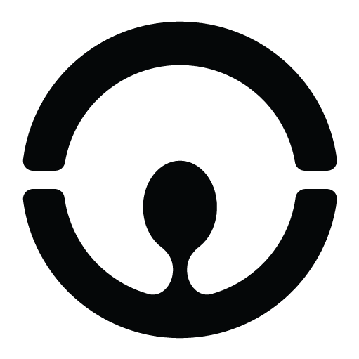
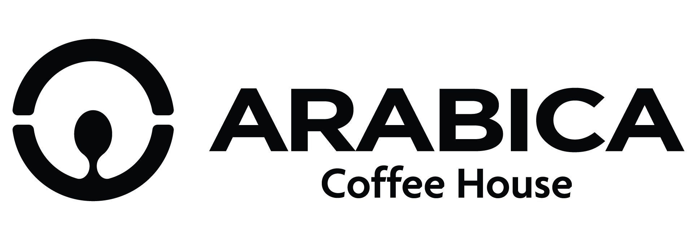
02Form transformation
≈ 45°
The original form is slightly rotated and transformed.
03Final conceptSpoon
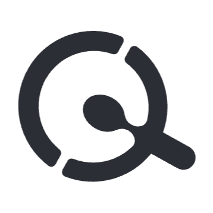
The shape takes on the appearance of a spoon, a reference to kitchens, food and culinary activities.
→ Kitchen FitKitchen Fit
04 Application
Real-life brand application
- 01Inspiration — Arabica Coffee House
- 02Development — rotated, read as a spoon
- 03Final — Kitchen Fit logo
- 04Application — storefront signage
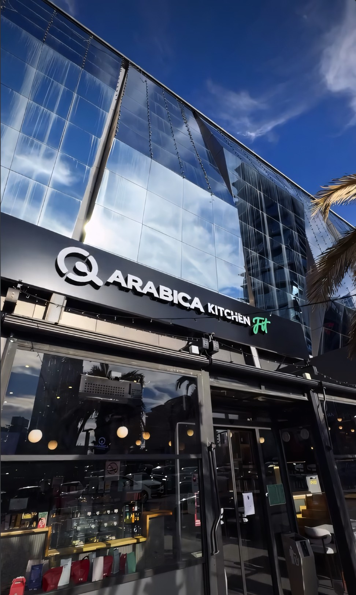
Arabica Coffee House logo shown as the design reference. Both logos are reproduced unaltered; the step 02 rotation is the original mark turned for illustration.
10.2Vicitech
Vicitech
4 colour versionsClient project · created at ADL Kurumsal · Logo design · up to 3 days
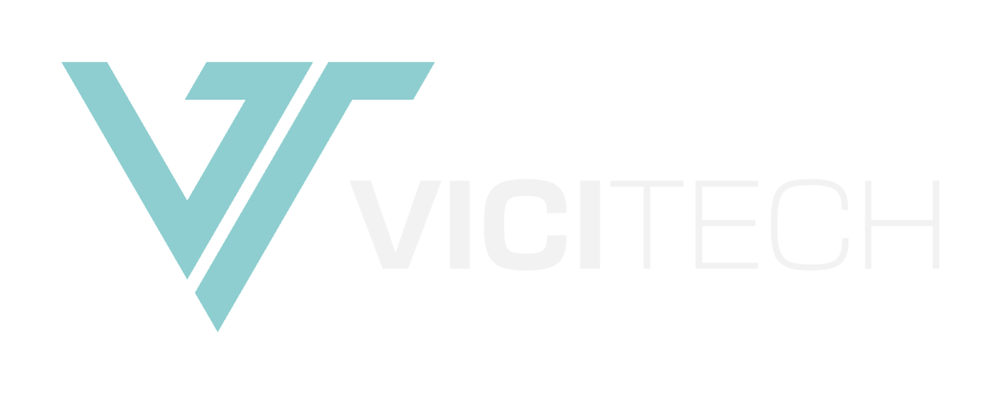
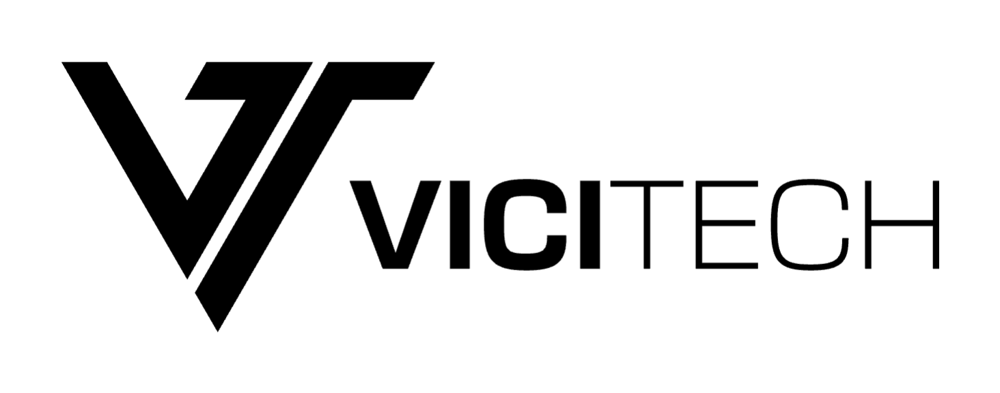
HEX #8ECED0
HEX #1A1A1A
10.3SRadar
SRadar
Primary logoClient project · created at ADL Kurumsal · Logo design · up to 3 days
[ Scale ]
240 px
140 px
80 px
HEX #8D33E3
HEX #000000